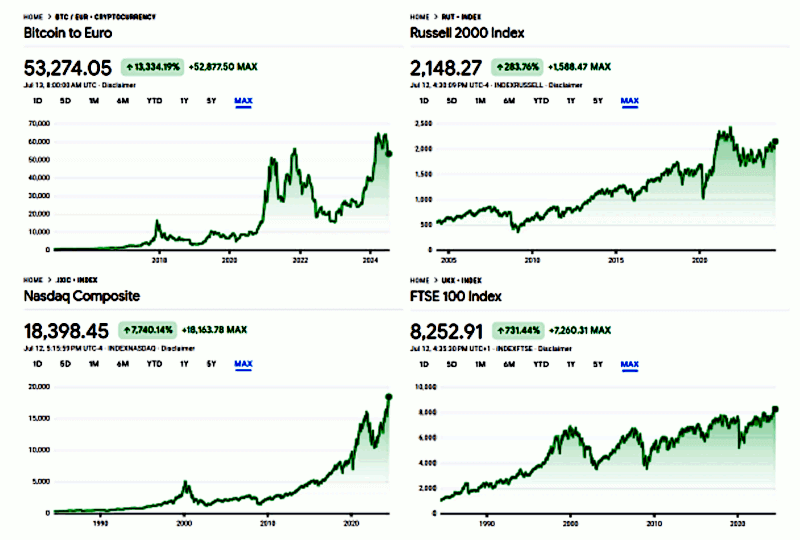

The BRICS financial system, hope or WW3?
Published on 7th June 2024 - origin - LinkedIn post
The article was published on LinkedIn
here and updated to 4th version.
The BRICS economics, soon a financial and a monetary systems.
Suggestions? Few but relevant.
1. Use the "BTC as digital gold" backup for those assets that should be traded or issued in a strictly limited volume and should be electronic because it makes sense to backup material with material and digital with digital.
2. In issuing a currency, avoid the fiat-currency. Whatever you might think about it, the fiat-currency always lead to a political-warfare approach. A fiat-currency without an army ready to defend it, it is just numbers into some kind of book digital or physical.
3. We all know that gold is not enough to backup the value of the currency when it should be issued in great volume and sometimes, it is temporarily necessary for stabilize thesystem. Hence, a multiple commodity reserve should be created as a backup: gold, silver, copper, oil, gas, etc.
4. A commodities reserve to backup a currency can be indexed (or balanced) with an electronic currency, and again, the Bitcoin is the best in class for this role while all the other are just numbers.
5. A new financial system and international transactions platform can be based on Ethereum because it offers a distributed infrastrutture and smart contracts. Two characteristics that fulfill the need for an independent and autonomous financial platform.
The true alternative
In the same moment that a part of the world, the Western, insists in imposing their fiat currency and financial system on all the other countries in the world, the alternative is
NOT creating a similar system against it.
In this way, the world will be spitted in two halves and both with a financial paradigm that implies the need to defend their own choice with the army. Thus, soon or later, leading to an inevitable war.
We all, know where this approach will bring us, to the WW3.
Instead, a true open as open access, free as freedom, independent like distributed ledgers, monetary and financial system would be a complete different thing. A true alternative, something that it can be leveraged by anyone in the world.
The best war is the one that is not fought. — Sun Tzu.
The alternative is not about winning or losing, but between war and peace.
Update 15.06.2024
Boris Siljanoski wrote: <<
While value of BTC is holding, almost nobody uses it to buy and sell things day to day, and this hasn't changed.>> like gold, in fact.Hence Bitcoin can be interesting for coupling it as electronic part of a commodities basket that works as a collateral for a non-fiat money but a golden-standard banconote. Instead of gold only, the backup is about other valuable raw material.
This means that every financial and commercial transaction on the shared market is accounted during the day with something like Ethereum platform. Thus in a specific local zone a market open at 9 and closes at 18, for example. At midnight, all the translations booked in queue are going to be compensated among nations or baskets.
Because an international currency can have as collateral not just one commodity (e.g. gold) but many, not just a basket in a nation but many in many nations.
Hence there is a moment in which all the transactions should be compensated (net export vs net import).
The best way to do it is using Bitcoin to hold until enough commodities can be traded for granting the value of the currency. The electronic counterpart of the baskets and also a transnational buffer:
1 day (ETH) → 1 month (BTC) → 1 quarter (CF).
This will also reduce the volatility of the cryptocurrency involved like the petrol-dollar agreement that was in place for the last 50 years, granted to USD.
Update 18.06.2024
18th June 2024 - SEC closes Ethereum 2.0 investigation, will not pursue Ethereum enforcement action
After declaring in 2018 that Ether is not a security, in 2023 the SEC secretly decided to claim power over this digital asset as a security and has been conducting an invalid investigation into Ethereum.
Consensys sued the SEC on April 25, 2024 to defend the Ethereum ecosystem, seeking a court order that would halt the SEC’s investigation, on the grounds that ETH is a commodity and therefore the SEC lacks jurisdiction to investigate or regulate it. Following our lawsuit, numerous policymakers–including members ofCongress–and the public at large voiced concern over the SEC’s Ethereum 2.0 investigation.
On June 7, we sent a letter asking the SEC to confirm that the ETH ETF approvals in May, which were predicated on ether being a commodity, meant the agency would close its Ethereum 2.0 investigation.
Today, the Enforcement Division of the SEC responded by notifying us that it is closing its investigation into Ethereum 2.0 and will not pursue an enforcement action against Consensys.
Source:
Consensys and saved in
data folder.
Update 14.07.2024
Those got interested in Bitcoin, as investment for speculation or just because its technology, often are facing this statement which appear to be pro-Bitcoin adoption:
with widespread adoption and more stability, BTC could be quite incredible.
First of all, we need to notice that this is a legal tender biased opinion. As many people are adopting the USD for their commercial transactions as much the USD would be a stable mean for trading. A legal tender as custom rather than enforced by an authority.
In case of the Bitcoin, because its design and implementation, it is the opposite.
People recognized it as something valuable - because its functionalities or as an asset - and therefore authorities got interested in Bitcoin but still not being able to control it.
The most that they can do is regulating the exchanges between BTC and fiat currencies and viceversa. What they did, is regulating the financial and bankingsystem to recognize the BTC as something valuable which is worth attention and regulation.
Adoption vs Stability
However, being back to the claim above. If this conclusion would be correct, why Nasdaq index is quite as much volatile as the BTC price? Both shares an exponential trend, while Russell and FTSE indexes are showing a linear trend with a relatively lower volatility.

exponential trends VS linear trends, right click to enlarge
Hence, trend matters. We draw BTC and Nasdaq on a linear Y-scale but this presentation is not suitable compared to their trends which are exponential.
You might argue that BTC trend it not completely fits with an exponential trend - not as much as the Nasdaq - but Nasdaq time line started before 1980 while BTC not before than 30 years after.
Drawing the BTC and Nasdaq on a logarithmic Y-scale and adding min/max exponential limit curves would give us a correct measure about its volatility. A visual comparison with the Russel and FTSE min/max lines on a linear Y-scale, will provide us a new PoV.So, it does not matter how many people are involved into Nasdaq (or BTC) in determining its stability (or volatility). In fact, Nasdaq is one of the most popular market but it is still highly volatile.
Volatility depends by what underlies: commodity or ideas? A legal tender, a fiat currency or cryptocurrency that can be exchanged with a fixed rate with a commodity like gold or crude oil, automatically has a intrinsic value. On the opposite side, when a "
coin" is related to nothing that an idea - this coin is good because we like it - usually is named a "
shitcoin".
Update 15.07.2024
This algorithm is very interesting because it explains in details why and how the current BTC network can be jeopardized by future quantum computing.
Quantum computers and the Bitcoin blockchain by Deloitte, saved in data folder.
Which is mainly related to
1. current cryptographic algorithms are not quantum safe;
2. people do not keep at their heart best practices and expose themselves reusing their p2pkh addresses.
Fortunately, this is not the whole story but just the half. In order to get the full story we need to know that cryptographic switch to achieve the quantum safety is possible.
Quantum Secure Cryptocurrencies of the Future by BTQ, saved in data folder.
In the same way SSH can switch to a cryptographic algorithm to another also the BTC can do. As soon as, the thread is going to became real and its solution.
Update 18.07.2024
Just remember that the most used currencies in the past were fundamentally two:
1. coins contains enough intrinsic value to be worthy their facial value or a little less but enough to not be refused to be accepted which gap is called the "functional value" of the money.
2. legal tender issued by a public institution in name of the people of the country for which the value was granted by the whole society of that country.
About the "functional value" of the money, is somewhat about the risk (nominal value - metal value) people would accept in order to avoid the effort of managing by themselves little quantities of metal which purity might not be trusted entirely unless complicated and expensive tests.
How much is worth the "functional value" of the money compared with its real value?
History shown that it can be quite the whole amount of the value. Like in the case #2 in which the cost of printing the banknotes and keeping them fresh (retiring and reprinting the damaged ones) is just a little value of the whole monetary M1 mass.
Usually, to protect #2 currencies from the fluctuations (volatility) against others similar currencies a physical gold deposit was created.
Moreover, this (image attached) explain why Ethereal has a good chance to stand above everything else not-limited cryptocurrencies: its functionality and in particular the smart-contracts.
So, the question could be: why people might be interested in having ETH?
Because their intrinsic value? Hard to believe compared to BTC, as Bitcoin Cash shown pretty well.
Nope, ETH is good for quick financial transactions and creating derivatives or anything else that smart contracts can deal with.
This explains why ETH is worth $3K while BTC is worth $60K (18.07.2024) despite keeping running the Ethereal infrastructure costs a small fraction of mining BTC to keep its working. The "
functional value" of the ETH is higher than BTC while its intrinsic value is lower.
Moreover, ETH and BTC are not competing because their roles are completely different. Complementary, in fact. Like a financial trading/payment platformcompared to an economic exchange/reserve infrastructure.
Finally, the {speed, cost} of transactions defines the time buffers in dealing with ETH, BTC and raw material. In this way just the balances are worth of slower and expensive transactions. Thus the raw material delivery is the ultimate exchange.
Share alike
© 2024, Roberto A. Foglietta <roberto.foglietta@gmail.com>, CC BY-NC-ND 4.0